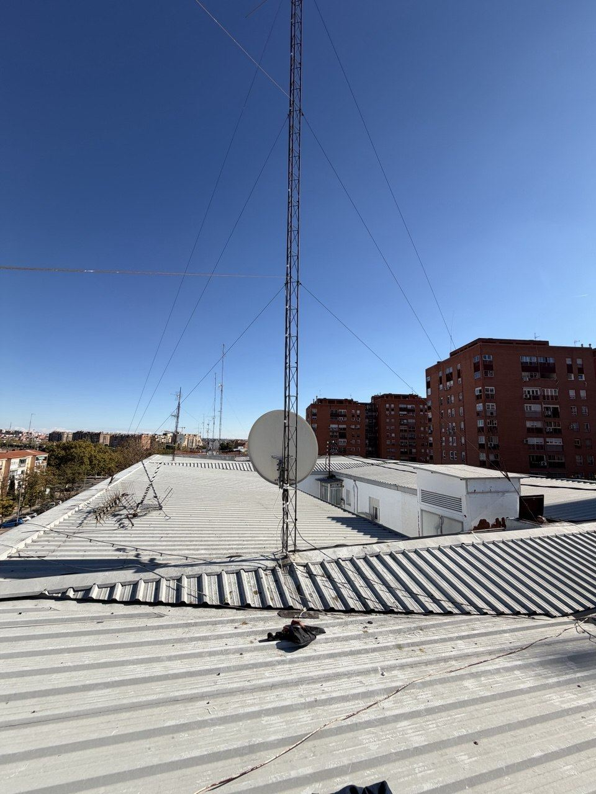
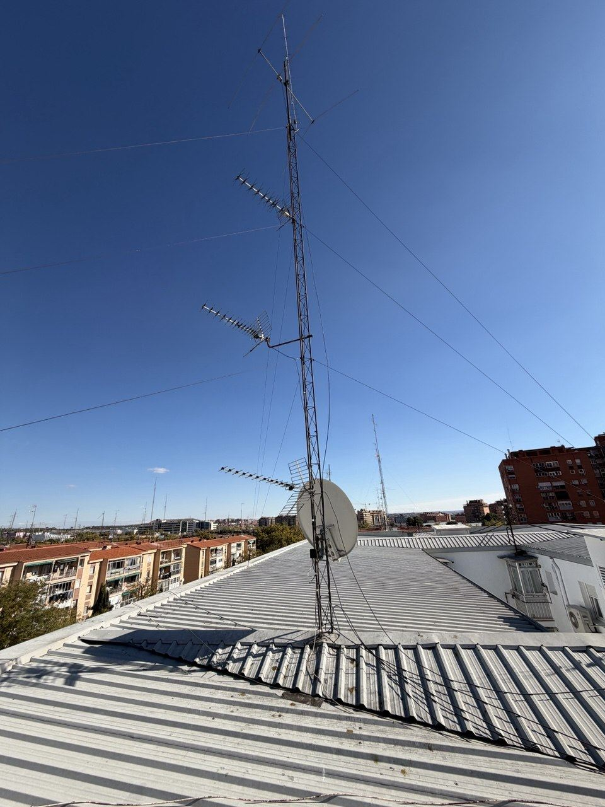
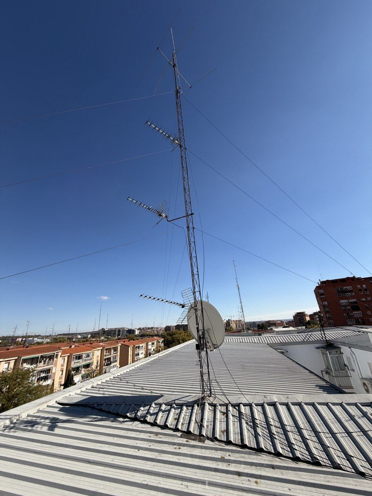
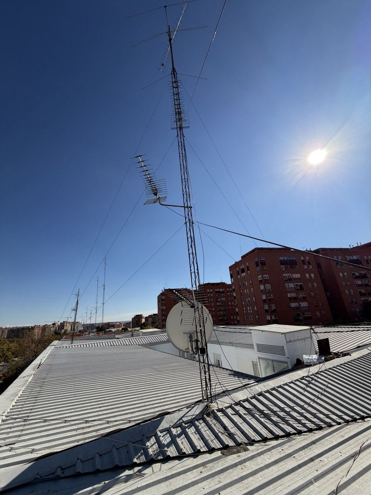

Antes



Pedir presupuesto →La recepción de TDT era deficiente y el mástil de la cubierta tenía antenas antiguas. Además, las interferencias de la banda de 5G pueden empeorar la señal de los canales cuando la antena no lleva filtro.
Retiramos las antenas antiguas y colocamos en el mástil una antena nueva con filtro 5G para mejorar la calidad de la señal.
Recepción de TDT mejorada y antenas antiguas fuera del mástil.


